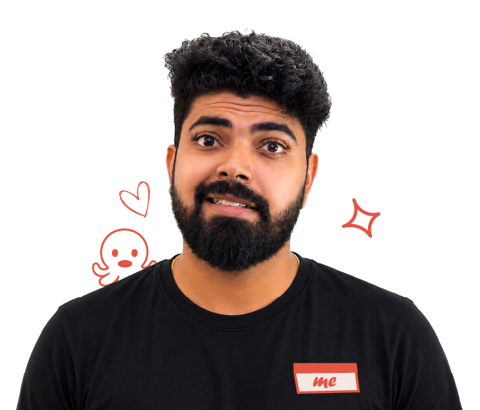
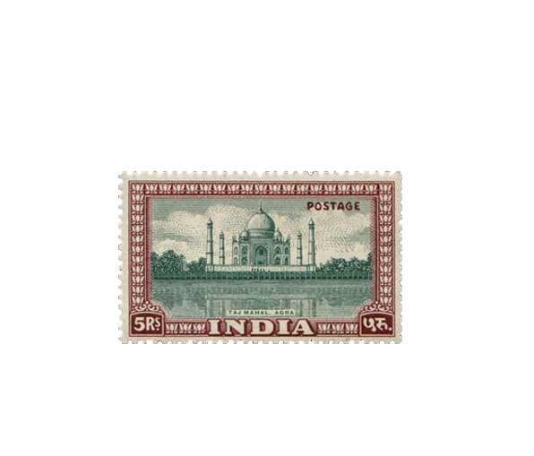
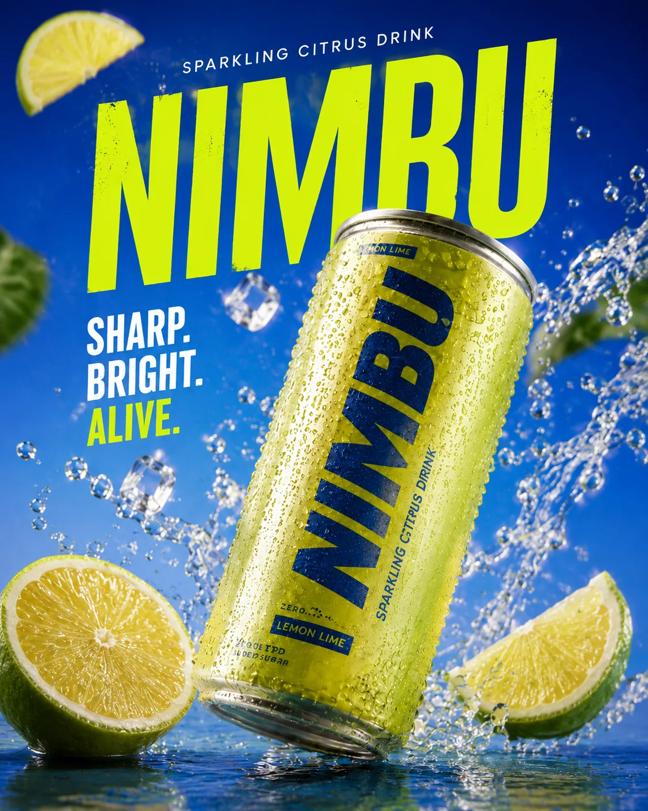
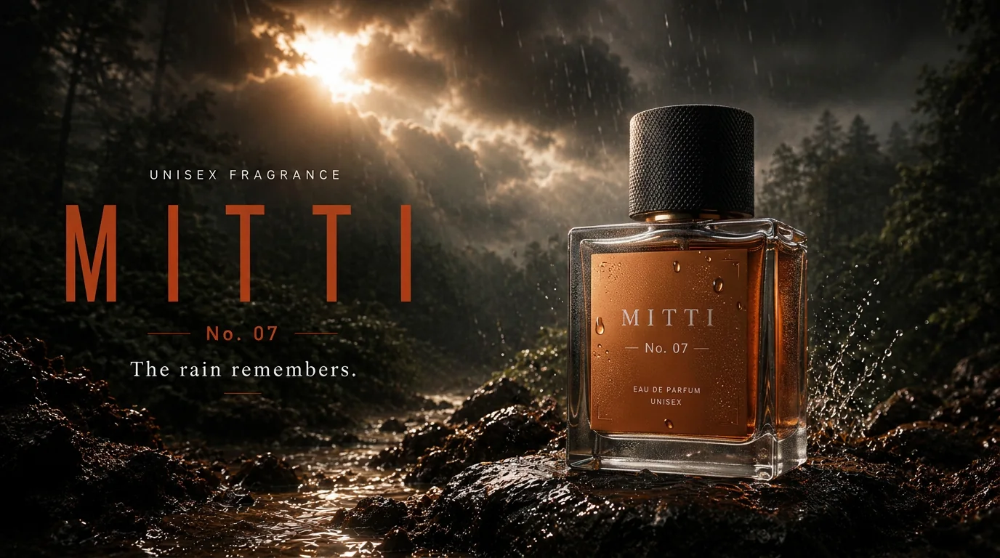
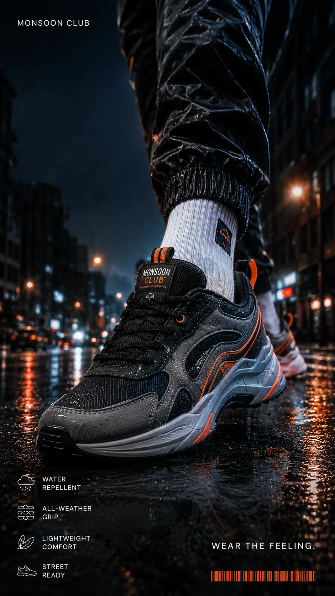

hello, internet ✦
I’m Varun. I make digital things feel playful.
I design digital experiences that communicate clearly, move beautifully, and leave a lasting impression.
grab a scrap & move it around ↘

hello, internet ✦
I design digital experiences that communicate clearly, move beautifully, and leave a lasting impression.
right now
Currently accepting freelance work, collaborations,
and exciting creative challenges.
a note to self
“Stay curious.
The best ideas are still ahead.”
Currently creating with
always exploring what’s next →

Based in IndiaOpen to projects worldwideYour Name ✦
Creative Designer
I build thoughtful websites and experiences with a little
personality, plenty of clarity, and just enough play.
ideas grow
better together
currently making things from India ⌁
selected work



Varun Shetty
Visual Designer · Storyteller · AI Creative
about me
I’m fascinated by how visuals influence the way people think, feel, and interact. That’s what keeps me designing.
Every project teaches me something. That’s why I keep making.